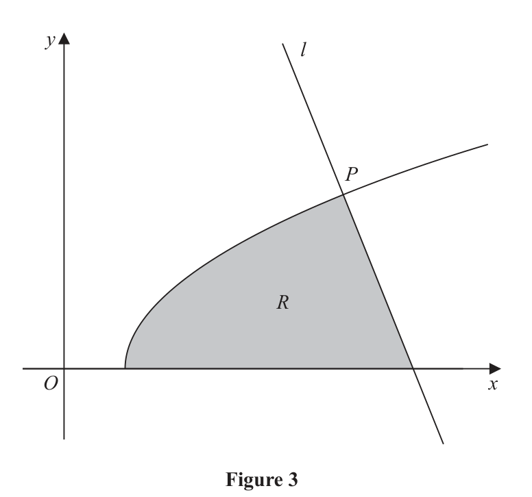
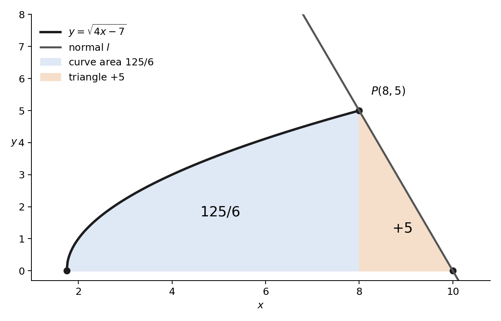

In this question you must show all stages of your working.
Solutions relying entirely on calculator technology are not acceptable.

Figure 3 shows a sketch of part of the curve with equation
$$y=\sqrt{4x-7}$$The line $l$, shown in Figure 3, is the normal to the curve at the point $P(8,5)$.
(a) Use calculus to show that an equation of $l$ is
$$5x+2y-50=0$$(5)
Part (a) [5 marks] was not covered in this lesson.
The region $R$, shown shaded in Figure 3, is bounded by the curve, the $x$-axis and $l$.
(b) Use algebraic integration to find the exact area of $R$. (4)
Status: part (a) not covered; part (b) discussed-only integration substep with complete official-reference reconstruction
[9 marks: (a)5, (b)4]
Not covered in the lesson.
The curve meets the $x$-axis when $\sqrt{4x-7}=0$, so $4x-7=0$ and $x=7/4$. The curve reaches $P$ at $x=8$.
The normal is $5x+2y-50=0$, or $y=25-\tfrac52x$. It meets the $x$-axis at $x=10$.
Thus $R$ is the area under the curve from $7/4$ to $8$, plus the triangular area under the normal from $8$ to $10$.
Use the formula $\int u^{1/2}\,du=\tfrac23u^{3/2}$. With $u=4x-7$, $du=4\,dx$, so
$$\int(4x-7)^{1/2}dx=\frac14\cdot\frac23(4x-7)^{3/2}=\frac{(4x-7)^{3/2}}6.$$Apply the curve bounds:
$$\left[\frac{(4x-7)^{3/2}}6\right]_{7/4}^{8}=\frac{25^{3/2}}6-0=\frac{125}{6}.$$The region under the normal from $x=8$ to $x=10$ is a triangle with base $10-8=2$ and height $5$:
$$A_{\triangle}=\frac12(2)(5)=5.$$Therefore
$$A_R=\frac{125}{6}+5=\frac{125}{6}+\frac{30}{6}=\frac{155}{6}.$$